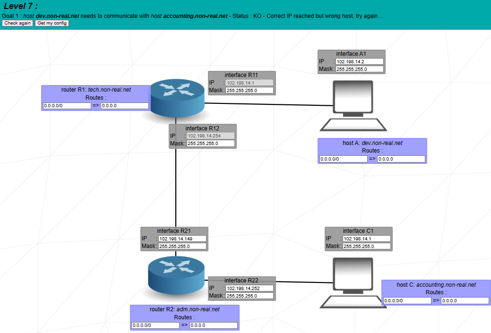
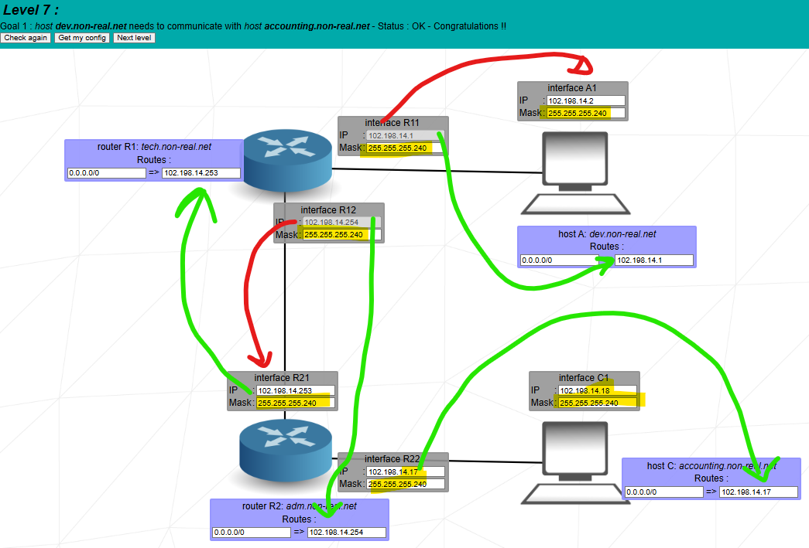

Goal: connect two departments (dev and accounting) using two routers and three /28 subnets, so that A ↔ C works across the routers and each host uses its router as a default gateway.


There are two small LANs (dev and accounting) and a point-to-point link between two routers. You choose a single mask /28 (255.255.255.240) for all subnets and:
You keep A and R11 together in the first /28 block.
102.198.14.1, mask 255.255.255.240 (/28).102.198.14.2, mask 255.255.255.240.Both R11 and A are in 102.198.14.0/28, so A can use R11 as gateway.
C and R22 share another /28 for the accounting department.
102.198.14.17, mask 255.255.255.240 (/28).102.198.14.18, mask 255.255.255.240.Both are in 102.198.14.16/28, so C uses R22 as its gateway.
The link between R1 and R2 is a third /28.
102.198.14.254, mask 255.255.255.240 (fixed).102.198.14.253, mask 255.255.255.240.R12 and R21 sit in 102.198.14.240/28, forming the transit network between the two routers.
A /28 gives 16 addresses (14 usable), which is perfect for:
Using the same mask everywhere makes the address plan easier to explain in the evaluation and avoids wasting addresses.
Each host sends non-local traffic to its own router:
So if A or C wants any address outside its /28, it forwards the packet to its default gateway.
Each router knows its directly connected /28s, and uses a default route to reach the other side through the backbone:
So non-local traffic from dev goes to R21, and non-local traffic from accounting goes to R12; each router then routes into its local LANs.
The packet leaves dev, crosses the router link, and enters the accounting LAN.
The reply uses the symmetric path across the same backbone subnet.
Notice how both A and R1 use their default routes. On the way back, C and R2 do the same in reverse.
“In Level 7 I connect two departments, dev and accounting, using two routers. I choose one mask, /28 (255.255.255.240), for all subnets. I create three /28 networks: 102.198.14.0/28 for dev (R11=.1, A=.2), 102.198.14.240/28 for the router link (R12=.254, R21=.253), and 102.198.14.16/28 for accounting (R22=.17, C=.18).
Each host has a default route to its local router: A to 102.198.14.1 and C to 102.198.14.17. Each router knows its directly connected /28s and has a default route pointing to the other router across the backbone: R1 defaults to 102.198.14.253 and R2 defaults to 102.198.14.254. When A sends to C, the packet goes A → R11 → R12 → R21 → R22 → C. The reply from C follows exactly the reverse path. This setup shows how several small /28 subnets and default routes can connect two departments through a pair of routers.”